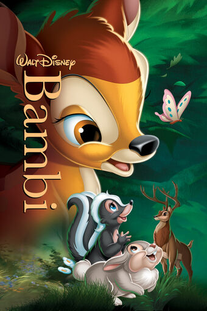
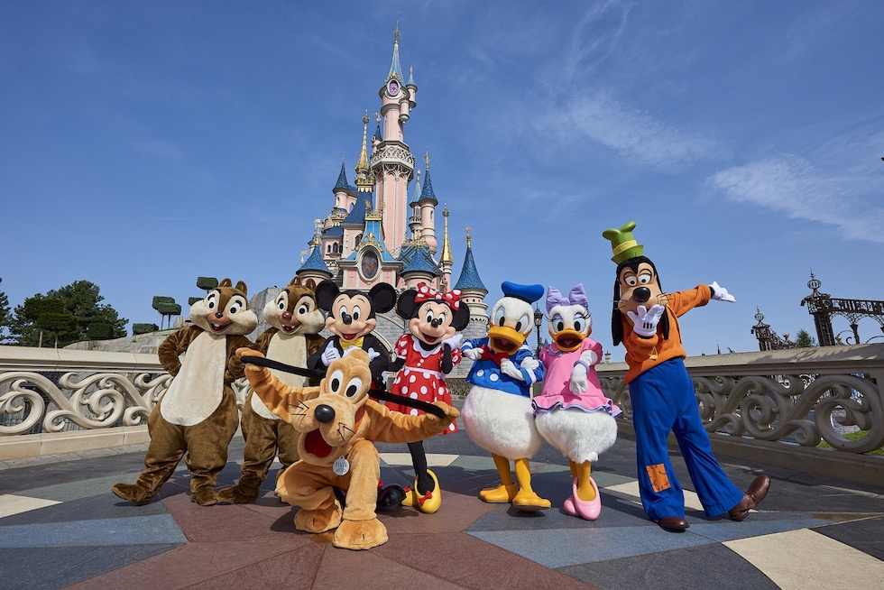

Mijn top 3 favoriete Disney films
- Geschiedenis
- Uitbreiding
- Disney in 2020
Spring direct naar:
Hallo, super tof dat je deze website bezoekt!
.jpg) Op deze website ga ik mijn top 3 favoriete disney films bespreken,
maar eerst wil ik graag wat achtergrond informatie over Disney delen.
Ben je nieuwsgierig en wil je meteen naar mijn top 3?
Klik dan op de afbeelding van Doornroosje hiernaast en je wordt meteen doorgestuurd!
Denk je, ik kan wel wachten. Lees dan met gemak verder!
Op deze website ga ik mijn top 3 favoriete disney films bespreken,
maar eerst wil ik graag wat achtergrond informatie over Disney delen.
Ben je nieuwsgierig en wil je meteen naar mijn top 3?
Klik dan op de afbeelding van Doornroosje hiernaast en je wordt meteen doorgestuurd!
Denk je, ik kan wel wachten. Lees dan met gemak verder!
Geschiedenis
 De oprichter van Disney is de welbekende Walt Disney, hij is geboren op 5 december
1901 en is gestorven in Los Angeles op 15 december 1966. Naast alleen oprichter
zijn, was Walt ook een Amerikaans stemacteur, regisseur, zakenman, producent, schrijver
en tekenaar.
De oprichter van Disney is de welbekende Walt Disney, hij is geboren op 5 december
1901 en is gestorven in Los Angeles op 15 december 1966. Naast alleen oprichter
zijn, was Walt ook een Amerikaans stemacteur, regisseur, zakenman, producent, schrijver
en tekenaar.
Na de Eerste Wereldoorlog, waar Walt Disney en zijn broer beiden hadden gediend, besloten
ze samen in 1923 een tekenfilmstudio op te richten genaamd: The Disney Brothers Company.
Het bedrijf ging zich bezighouden met het maken van tekenfilms. Walt werkten samen met
animators aan zijn ideeen en creerde korte tekenfilmpjes. In 1928 kwam zijn eerste
echte tekenfilm met beeld en geluid uit, Steamboat Willy. Deze tekenfilm was gelijk
ook de introductie van Mickey en Minnie Mouse.
In 1932 kwam Walt Disney met de eerste kleurtekenfilms,

Flowers and Trees.
Tegelijkertijd introduceerde Disney nieuwe karakters zoals Donald Duck. In 1937 kwam
de eerste lange animatiefilm uit, Sneeuwwitje en de Zeven Dwergen, dit werd zo'n
groot succes dat Walt Disney hiervoor een Oscar kreeg. Disney bleef hierna films maken
en groeide daarbij steeds verder. Toen de Tweede Wereldoorlog uitbrak, presteerde
Disney wat minder. Bambi werd niet veel bekeken in de bioscoop en Mickey Mouse verloor
veel populariteit.
Na afloop van de Tweede Wereldoorlog ging Disney verder met het produceren van lange
tekenfilms, onder meer Pinokkio, Alice in Wonderland en Peter Pan.
De films waren redelijk succesvol, maar het grootste succes van deze periode was toch echt
Assepoester. Ook hield Disney zich nog steeds bezig met het maken van korte films over
de avonturen van Mickey Mouse, Donald Duck, Goofy en Pluto, maar deze filmpjes verloren echter
steeds meer populariteit door het succes van de lange films.
Uitbreiding
Disney begon zich met steeds meer verschillende projecten bezig te houden. Hij startte een muziekafdeling op en begon themaparken te ontwikkelen. Ook werden klassiekers als Lady en de Vagebond(1955), Doornroosje (1959) en de 101 Dalmatiers (1961) uitgebracht. Het grootste succes van de jaren '60 was echter de speelfilm Mary Poppins uit 1964.
Pretparken
Walt Disney World en Disneyland Resort Paris (ook wel Euro Disney genoemd) zijn de bekendste  pretparken van Disney, maar dit zijn niet de enige pretparken met Disneypersonages. In 1955 opende Walt Disney bijvoorbeeld een kleiner park van Disney, namelijk Disneyland in Anaheim/ Dit is het allereerste pretpark van Disney, al kent bijna niemand het park bij naam.
Klassieker jaren '60
.jpg)
.jpg)
.jpg)
.jpg)
Disney in 2020
Door de coronacrisis draait Disney voor het eerst in ruim veertig jaar omzetverlies
De verminderende inkomsten zijn deels te verklaren door de sluiting van themaparken
en de daardoor inkomsten van de verkoop van merchandise. Daarnaast werden producties
van films en televisieseries uitgesteld, mede door de wereldwijde sluiting van filmzalen.
Disney besloot zelfs de langverwachte speelfilmversie van Mulan niet in bioscopen
maar op streamingskanaal Disney + uit te zenden. Ook verschijningsdata van Marvel-superheld
Black Widow en Pixar-animatiefilm Soul werden verschoven.